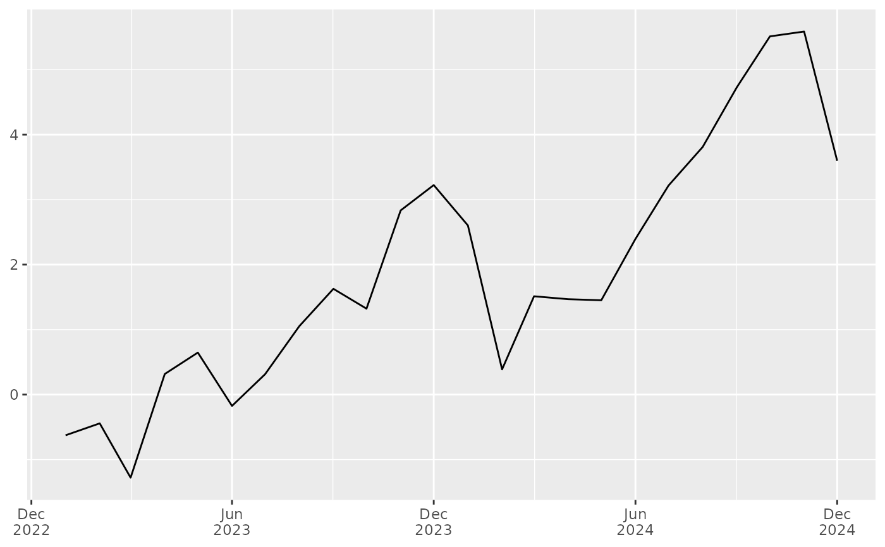

Date breaks anchored to last data month (for ggplot)
date_breaks_gg.RdCreate a breaks function for scale_x_date() that
always includes the last actual data month and then selects every
nth month counting backward.
Examples
# Minimal reproducible example (avoid using the name `df`, which masks stats::df)
set.seed(1)
dat <- data.frame(
date = seq(as.Date("2023-01-01"), by = "month", length.out = 24),
value = cumsum(rnorm(24))
)
library(ggplot2)
ggplot(dat, aes(date, value)) +
geom_line() +
scale_x_date(
date_labels = "%b\n%Y",
breaks = date_breaks_gg(n = 6, last = max(dat$date))
) +
labs(x = NULL, y = NULL)
